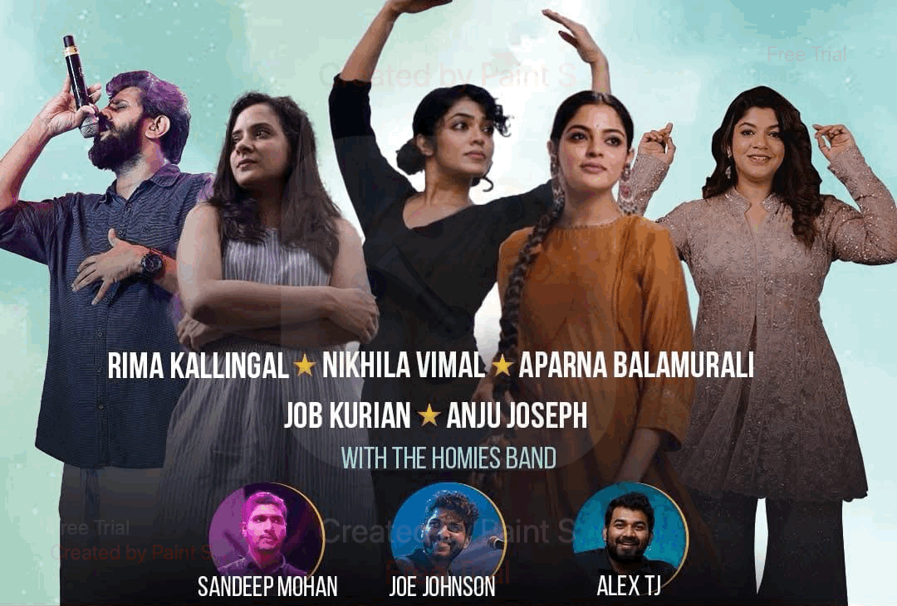
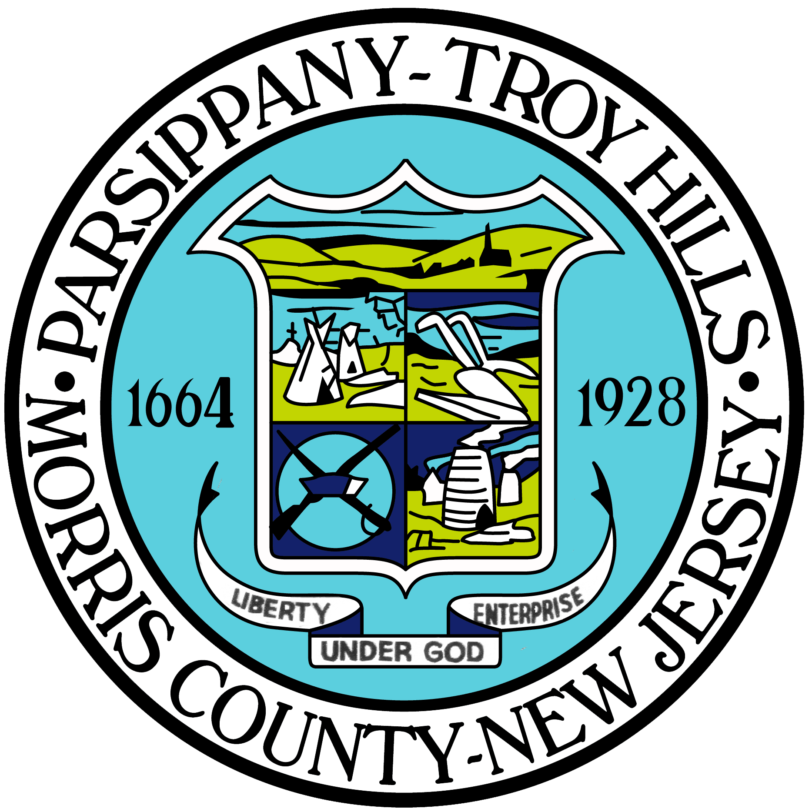

MARQUEE - A Music And Dance Ensemble With The Homies Band
Buy tickets
Let's Promote The Culture Of Kerala
Learn More


The Parsippany Emergency Food Pantry would like to thank you for your generous donation of food. The USDA estimated in 2020, about 657,320 people in New Jersey were food insecure, including 175,830 children. These days it takes two incomes to make ends meet, and often even that is not enough. When people do not have enough money to buy food, difficult choices have to be made. People often forego buying medicine, paying bills, rent, and mortgage. This often creates a downward financial spiral in the household. But food insecurity can be solved if we all work together. If we all help each other, we can make a huge difference. You and your associates obviously understand this, and we truly appreciate your help in feeding our communitys .